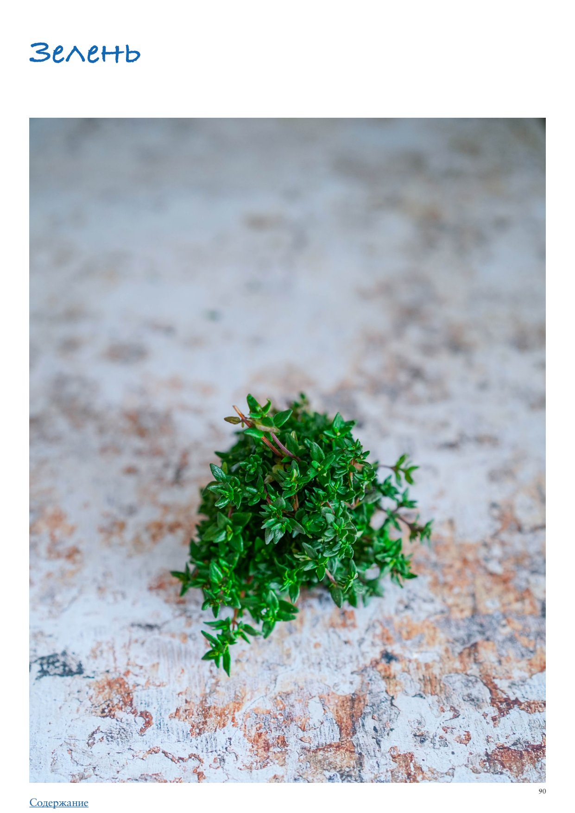

<!DOCTYPE html>
<html lang="en">
<head>
<meta charset="UTF-8">
<meta name="viewport" content="width=device-width, initial-scale=1.0">
<title>Зелень</title>
<style>
  * { box-sizing: border-box; margin: 0; padding: 0; }
  body { font-family: -apple-system, BlinkMacSystemFont, 'Segoe UI', Roboto, sans-serif;
         background: #faf7f4; color: #2d2926; max-width: 680px; margin: 0 auto; padding-bottom: 40px; }

  .photo-wrap img { width: 100%; max-height: 380px; object-fit: cover; object-position: center center; display: block; }

  .header { padding: 24px 24px 16px; }
  h1 { font-size: 26px; font-weight: 700; line-height: 1.2; margin-bottom: 10px; color: #1a1714; }
  .meta { font-size: 13px; color: #9a8a80; margin-bottom: 6px; }
  .rating { display: inline-block; background: #fff3e6; color: #c05f2a;
             font-size: 13px; font-weight: 600; padding: 3px 10px; border-radius: 20px; margin-bottom: 8px; }
  .source { font-size: 12px; color: #b0a09a; margin-top: 4px; }

  .info-bar { font-size: 13px; color: #5a4a3a; margin: 6px 0 4px; }

  .section { padding: 0 24px; margin-bottom: 24px; }
  .section-title { font-size: 15px; font-weight: 700; color: #7a4f2a;
                    text-transform: uppercase; letter-spacing: 0.6px;
                    margin-bottom: 12px; display: flex; align-items: center; gap: 8px; }
  .section-icon { font-size: 17px; }

  .subsection-title { font-size: 15px; font-weight: 700; color: #3a2a1a;
                       margin: 24px 0 10px; padding-bottom: 5px;
                       border-bottom: 2px solid #e8d5b8; }
  .ingr-subheader { font-size: 13px; font-weight: 700; text-transform: uppercase;
                     letter-spacing: 0.5px; color: #8a6a3a; margin: 14px 0 4px; }
  .ingr-list { list-style: none; display: flex; flex-direction: column; gap: 8px; }
  .ingr-list li { font-size: 15px; line-height: 1.5; padding: 8px 12px;
                   background: white; border-radius: 8px;
                   border-left: 3px solid #f0c080; }
  .qty { font-weight: 600; color: #c05f2a; }

  .steps { list-style: none; counter-reset: steps; display: flex; flex-direction: column; gap: 12px; }
  .steps li { font-size: 15px; line-height: 1.6; padding: 12px 14px 12px 48px;
               background: white; border-radius: 10px; position: relative; }
  .steps li::before { counter-increment: steps; content: counter(steps);
                       position: absolute; left: 12px; top: 12px;
                       width: 26px; height: 26px; background: #f0c080;
                       border-radius: 50%; display: flex; align-items: center;
                       justify-content: center; font-weight: 700; font-size: 13px; color: #7a4f2a; }

  .notes-list { list-style: disc; padding-left: 20px; margin: 0; }
  .notes-list li { font-size: 15px; line-height: 1.6; color: #2d2926; }

  .my-notes-section { margin-top: 8px; }
  .my-notes-box { background: #fffef5; border: 1.5px dashed #c8b870; border-radius: 12px;
                  padding: 14px 18px; font-size: 14px; line-height: 1.7; color: #5a4a30; }
  .my-notes-box p { margin-bottom: 6px; }
  .my-notes-box p:last-child { margin-bottom: 0; }
  .empty-note { color: #c0b090; font-style: italic; }

  .recipe-table { width: 100%; border-collapse: collapse; margin: 4px 0 12px; font-size: 14px; }
  .recipe-table th { background: #f5ede4; color: #7a4a28; padding: 8px 12px;
                      text-align: left; border: 1px solid #e0cfc0; font-weight: 700; }
  .recipe-table td { padding: 8px 12px; border: 1px solid #e8ddd5; vertical-align: top;
                      line-height: 1.5; }
  .recipe-table tr:nth-child(even) td { background: #fdf8f5; }

  p.para { font-size: 15px; line-height: 1.65; color: #2d2926; margin-bottom: 12px; }
  p.para:last-child { margin-bottom: 0; }

  .inline-photo { margin: 16px 0; border-radius: 10px; overflow: hidden; }
  .inline-photo img { width: 100%; max-height: 320px; object-fit: cover; object-position: center center; display: block; }
  .inline-photo.portrait { display: flex; flex-direction: column; align-items: center; background: transparent; }
  .inline-photo.portrait img { width: auto; max-width: 55%; max-height: none; object-fit: contain; border-radius: 10px; }
  .inline-photo.portrait figcaption { width: 55%; text-align: center; }
  .inline-photo figcaption { font-size: 12px; color: #9a8a80; padding: 6px 10px;
                               background: #f5f0eb; font-style: italic; }
  .inline-video { margin: 16px 0; border-radius: 10px; overflow: hidden; background: #000; }
  .inline-video video { width: 100%; max-height: 400px; display: block; }
  .inline-video figcaption { font-size: 12px; color: #9a8a80; padding: 6px 10px;
                               background: #f5f0eb; font-style: italic; }

  .related-section { font-size: 13px; margin-top: 8px; color: #9a8a80; }
  .related-label { font-weight: 600; color: #7a4f2a; }
  .related-link { color: #c05f2a; text-decoration: none; font-weight: 500; }
  .related-link:hover { text-decoration: underline; }

  .cooked-bar { font-size: 13px; margin-top: 10px; display: flex; flex-wrap: wrap; align-items: center; gap: 6px; }
  .cooked-label { font-weight: 600; color: #7a4f2a; }
  .cooked-chip { background: #f0ede6; color: #5a4a3a; padding: 3px 10px;
                  border-radius: 20px; font-size: 13px; border: 1px solid #d8cfc4; }

  .my-photo-wrap { margin: 24px 24px 0; border-radius: 12px; overflow: hidden;
                    border: 2px solid #e8d9c8; }
  .my-photo-label { background: #f5ede4; color: #7a4f2a; font-size: 12px; font-weight: 600;
                     padding: 6px 14px; letter-spacing: 0.4px; }
  .my-photo-wrap img { width: 100%; max-height: 420px; object-fit: cover;
                        object-position: center; display: block; }

  .back-btn { display: inline-flex; align-items: center; gap: 6px;
               margin: 28px 24px 20px;
               background: #c05f2a; color: white;
               font-size: 14px; font-weight: 600;
               padding: 8px 16px; border-radius: 20px;
               text-decoration: none; }
  .back-btn:hover { background: #a04e22; text-decoration: none; }

  @media (max-width: 480px) {
    h1 { font-size: 22px; }
    .steps li { padding-left: 42px; }
  }
</style>
</head>
<body>
  <a class="back-btn" href="../cookbook.html">← Catalog</a>
  <div class="photo-wrap"></div>
  <div class="header">
    
    <h1>Зелень</h1>
    <div class="meta">ПРАктика. Овощи</div>
    
    
    
    <div class="source">Source: ПРАктика. Овощи</div>
  </div>
  
  
        <div class="section">
          
          <p class="para">Зелень</p><p class="para">В одном кулинарном телешоу озвучили статистику: больше всего из продуктов мы выбрасываем… правильно — зелень, которая увяла и пожелтела, потому что до нее просто не дошли руки. Печально, но факт, все мы с этим сталкиваемся. А ведь зелень — это кладезь пользы для здоровья, источник чудесного вкуса и аромата, а еще самое простое и эффектное украшение нашей еды! Давайте рассмотрим разные виды зелени и разберемся, как лучше ее сохранить и что с нею можно приготовить, чтобы больше не выбрасывать. Все многообразие зелени можно условно разделить на две группы: сочная, у которой съедобны листья и стебли, и такая зелень в большинстве (укроп, петрушка, кинза и так далее), и ароматная, но с жесткими несъедобными стеблями (розмарин, тимьян, эстрагон, шалфей) и более плотными листочками, в которых меньше влаги. Зелень из первой группы лучше использовать в свежем виде, из второй — можно легко замораживать и сушить.</p><ul class="notes-list"><li>Мы не включили в список зелени шпинат и рукколу, так как будем рассматривать их в другой статье, посвященной листовому салату, а также зеленый лук, зелень чеснока и черемшу, о которых рассказываем отдельно. Укроп — самая «русская» зелень, которую во многих регионах мира почему-то не понимают. Пожалуй, не менее чем мы, укроп обожают только в Скандинавии, где это непременный ингредиент любых рыбных и овощных блюд. Зелень укропа прекрасна в свежих салатах, гармонично дополняет картошку и рыбу, созревшие зонтики — обязательный элемент солений и маринадов. Ароматные семена укропа используются как специя. Петрушка — универсальная зелень с приятным, не слишком навязчивым вкусом и тонким ароматом. Самая «французская» травка, она способна улучшить вкус практически любого несладкого блюда, от салата до супа или рагу. Если в рецепте предлагается просто посыпать готовое блюдо зеленью, берите петрушку — не ошибетесь. Кудрявая петрушка поможет сделать блюдо эффектнее внешне, но обычная, плосколистная — более ароматная. Кинза — эта пахучая травка наиболее популярна в Азии, на Кавказе и в Южной Америке. Очень ароматная и нежная, она освежает жирные и жареные блюда, в больших количествах используется в пряных соусах и острых супах. Удивительно, но часто детям не нравится кинза, хотя взрослые почти всегда меняют свое мнение и едят ее с удовольствием. Мята — насыщенная эфирными маслами, мята отличается очень сильным свежим ароматом, который невозможно спутать ни с каким другим. Активнее всего в готовке мяту используют на Ближнем Востоке, в России она традиционно ассоциируется лишь со сладкими блюдами и напитками. В странах Азии популярна местная разновидность, которую в продаже можно встретить под названием «азиатская мята»; эти два вида зелени вполне взаимозаменяемы. Базилик — зеленый базилик является «визитной карточкой» итальянской кухни, и если вы видите где-то фото итальянской пасты или пиццы, скорее всего, блюдо будет украшено именно этой ароматной зеленью. Фиолетовый базилик (его еще называют реган, рейхан) родом с Кавказа, там он используется и как элемент супов, соусов, тушеных блюд, и подается в больших количествах в свежем виде к любому приготовленному на углях мясу, например, шашлыку. Базилик отлично сочетается с помидорами, капустой и бобовыми. Эстрагон (тархун) — очень ароматная зелень известна нам по любимому с детства изумрудному лимонаду под названием «тархун». Эстрагон особенно популярен во французской кухне, где на нем настаивают уксус и используют зелень в рыбных блюдах, а также в разнообразных соусах. В России он чаще выступает ингредиентом маринадов при консервировании. Орегано (душица) — еще одна типично средиземноморская травка, которую итальянцы непременно добавляют в томатный соус для пасты и пиццы. Интересно, что это одна из немногих</li></ul><p class="para">трав, которые в сухом виде намного ароматнее, чем в свежем. Орегано часто кладут в фарш для колбас, в мясные паштеты. Прекрасно сочетается с бараниной, свининой и помидорами. Тимьян (чабрец) — традиционная ароматная добавка к овощным, рыбным блюдам и к птице во Франции. В России чабрец чаще всего используется как добавка в чай, хотя спектр блюд, в которых тимьян замечательно подчеркивает и усиливает вкусы, может быть очень широким, включая даже десерты (тимьян отлично сочетается с яблоком, например). Очень вкусно отварить картошку с добавлением тимьяна. Розмарин — у этой ароматной травы жесткие, деревянистые несъедобные стебли, поэтому при готовке мы добавляем только узкие листочки, напоминающие иголочки. У розмарина резкий характерный аромат, который сочетается далеко не с любыми продуктами. Лучше всего розмарин «дружит» со свининой, птицей, дичью, плотной рыбой (типа рыбы-меча), картофелем. Важно: если в блюде используется лавровый лист, в него не кладут розмарин, и наоборот (их ароматические профили конкурируют друг с другом). Зелень фенхеля — нежная сочная зелень внешне похожа на светлый укроп, а в аромате явственно чувствуются присущие фенхелю анисовые нотки. Отдельно зелень фенхеля в продаже вы вряд ли встретите, но если готовите блюдо с добавлением луковицы фенхеля, не выбрасывайте зелень, а используйте ее для украшения. Зелень сельдерея — также не особо часто встречается в продаже отдельно, обычно ее можно найти внутри сросшегося пучка стеблей сельдерея. Бледно-желтая и ароматная, она так и просится в состав любого блюда, в которое входит сельдерей. Полностью созревшие темно￾зеленые листочки сельдерея довольно жесткие, поэтому их лучше использовать не в свежем виде, а добавлять в готовящиеся блюда типа супов или рагу. Шалфей — пряное растение с шероховатыми листьями с сильным характерным запахом, которые используют для придания аромата растопленному сливочному маслу, подающемуся в качестве соуса к блюдам из пасты, пюре и т. д. Также шалфей отлично сочетается с тыквой, печенью и блюдами из дичи, жирным мясом, особенно свининой, бобовыми. Майоран — у этой зелени есть необычное прозвище «колбасная трава», и не случайно — это самая популярная добавка в виде сухой зелени в колбасные изделия. Также майоран используется в составе маринадов для мяса, птицы и рыбы и при консервировании овощей. Отлично сочетается с капустой. Малоизвестная зелень Эти разновидности зелени редко встретишь в супермаркете, поэтому ищите их на фермерских рынках. Мелисса — нежная травка с лимонным вкусом и ароматом популярна в некоторых европейских странах и в американской кухне. Часто используется для ароматизации чая, в Дании с нею консервируют мясо. В свежем виде подходит для любых салатов, где уместна лимонная нотка, а также эффектно выглядит при украшении десертов. Кервель — съедобен только очень молодой, пока его ажурные зеленые листочки с ароматом, напоминающим смесь эстрагона, петрушки и аниса, не огрубели. Хорошо сочетается с блюдами из яиц и с рыбой. Не подходит для сушки, используется только в свежем виде. Чабер — в Армении известен как цитрон, в Грузии как кондари, популярен больше всего на Кавказе и в Средиземноморье. Идеально подходит для ароматизации блюд из нежного и нейтрального по вкусу мяса — телятины, индейки, курицы. Часто используется при</p><p class="para">консервировании овощей, входит в состав некоторых рецептов аджики. Любисток — интересная травка, внешне похожая на зелень сельдерея, с острым и пряным ароматом, который в готовых блюдах начинает напоминать грибной. Используется в свежем виде в салатах, хорошо сочетается с супами на основе картофеля, с бобовыми и свеклой. Ароматный корень любистока используется в кондитерских изделиях. Иссоп — малоизвестное растение с узкими листочками с ароматом, отдаленно напоминающим шалфей и имбирь. Особенно пахуч иссоп в сушеном виде. Идеально сочетается с бобовыми, яйцами, добавляется в фарш для колбас. Красивые голубовато-сиреневые цветки иссопа идеальны для элегантного украшения блюд. Бораго (огуречная трава) — листья бораго пахнут огурцом, на вкус слегка пряные, «луковые». Их используют в салатах, соусах, холодных супах, добавляют к жареной рыбе. Очень вкусны цветки бораго, ими в свежем виде украшают блюда, засахаривают, настаивают на них уксус, сиропы и ликеры, из сухих на Ближнем Востоке заваривают чай. Как выбирать Любую свежую зелень следует выбирать сочную, упругую, без желтизны и пятен, не вялую. Если слегка растереть листочек между пальцами, должен явственно чувствоваться аромат. Как хранить Хранится зелень лучше всего в отделении для овощей в холодильнике. Некоторые ставят пучки зелени в банки с водой, подобно цветам, и держат при комнатной температуре, но так зелень долго не сохранится. Как подготавливать и нарезать Любую зелень перед использованием нужно хорошо промыть (особенно кинзу, у нее в основании стеблей всегда скапливается грязь) и так же хорошо обсушить, быстрее и эффективнее всего — в сушилке-«карусели». У некоторых видов зелени стебли несъедобны, поэтому нужно снять листья со стеблей (мята, базилик, эстрагон, розмарин, тимьян). Впрочем, плотную зелень с жесткими стеблями часто для удобства добавляют при готовке целыми веточками, чтобы в конце удалить. Крупные листья, например, базилика или мяты удобно нарезать, используя технику шиффонад: сложить листья стопкой, свернуть в плотный «рулон» и нарезать поперек узкими полосками. Прочую зелень удобно рубить просто острым ножом. В продаже встречается особый нож для зелени «меццалуна» с одним или несколькими лезвиями в форме полукруга, но резать с его помощью зелень можно, только хорошенько наловчившись. Обычным ножом гораздо быстрее и проще. Если стебли зелени нежные и съедобные (петрушка, кинза), лучше все равно отделить листочки от стеблей и нарезать их по отдельности, потому что стебли всегда готовятся немного дольше, и добавлять их в процессе следует раньше, чем листья. Лайфхаки</p><ul class="notes-list"><li>Если у вас избыток свежей сочной зелени, можно ее засолить: мелко порубить, добавить соль из расчета 20 г на 100 г зелени, перемешать и плотно уложить в чистую банку с закручивающейся крышкой. Хранить в холодильнике до месяца и использовать в супах,</li></ul><p class="para">соусах, рагу, тушеных блюдах одновременно и для вкуса/аромата, и для того, чтобы их посолить.</p><ul class="notes-list"><li>Плотную ароматную зелень, такую как тимьян или розмарин, обычно продают довольно большими пучками, а по рецепту требуется, как правило, совсем немного. Рекомендуем оригинальный способ хранения: нарубить листочки, плотно уложить в углубления формочки для льда, залить оливковым маслом, заморозить, затем переложить масляные «кубики» в пакет с застежкой или контейнер, подходящий для заморозки, и хранить в морозильнике. Такое ароматное масло можно добавлять в рагу, соусы и супы.</li><li>Если зелень слегка увяла, ее оживит ледяная «ванна»: выложите зелень в миску, залейте очень холодной водой и выдержите 15–20 минут — она снова станет упругой. Как готовить Свежую сочную зелень добавляют ближе к концу приготовления или посыпают уже готовое блюдо. Плотную ароматную зелень, наоборот, кладут вначале, чтобы она лучше высвободила эфирные масла. Всегда сверяйтесь с рецептом и кладите зелень в нужный момент для наилучшего результата. Букет гарни Французы придумали такую гениальную вещь, как букет гарни — это действительно маленький перевязанный кулинарной нитью букетик из ароматных трав, который кладут в блюдо в процессе приготовления, а в конце без труда извлекают. Базовый состав букета гарни — петрушка, тимьян и лавровый лист, но по желанию и в зависимости от конкретного блюда в него могут также входить розмарин, базилик, чабер, майоран, кервель, сельдерей, шалфей и эстрагон. Рецепты с зеленью на каждый день</li></ul><ol class="steps"><li>Песто. Снять листочки зеленого базилика (100 г) со стеблей, порубить и сложить в чашу кухонного комбайна. Добавить 2 нарезанных зубчика чеснока, 40 г натертого пармезана, щепотку соли и 30 г слегка обжаренных кедровых орешков. Измельчить в пульсирующем режиме, затем постепенно, не выключая, влить 120–150 мл оливкового масла (ориентироваться на консистенцию — песто должно быть достаточно густым, не льющимся). Проверить вкус, досолить, поперчить. По желанию частично базилик можно заменить другой зеленью: петрушкой, рукколой или даже ботвой молодой морковки.</li><li>Гремолата. Порубить небольшой пучок промытой и обсушенной петрушки. Измельчить или пропустить через пресс 1 крупный зубчик чеснока. Натереть цедру 2 хорошо промытых от воска и обсушенных лимонов. Смешать и использовать как ароматную приправу к яичнице или омлету, овощам, поджаренным на гриле, любой итальянской пасте, особенно с овощами или морепродуктами, овощным супам, ризотто, тушеной белой фасоли.</li><li>Кюкю. Промыть, обсушить и мелко порубить 1/2 пучка укропа и 1/2 пучка петрушки, 1/2 пучка мяты без стеблей, 2 побега зеленого лука и 1 пучок шпината без стеблей, если они жесткие. Взболтать 8 яиц, посолить, поперчить и влить в миску с зеленью. Хорошо перемешать. Разогреть на сковородке 2 ст. л. оливкового масла, влить смесь яиц с зеленью, убавить огонь до слабого, накрыть крышкой и готовить, не трогая, 7–8 минут. Или поместить сковородку в духовку, нагретую до 180 °С, и запекать 10–12 минут, пока яйца полностью не схватятся.</li><li>«Ленивые» кутабы с зеленью и творогом. Мелко нарезать 1 крупную луковицу и обжарить на 4 ст. л. топленого масла до светло-золотистого цвета. Порубить 200 г ассорти зелени (укроп, петрушка, зеленый лук, шпинат, кинза), добавить к луку и готовить, помешивая, 2 минуты, чтобы зелень слегка увяла и равномерно покрылась маслом. Добавить 100 г рассыпчатого творога и перемешать. Снять с огня, посолить, поперчить и остудить. Вырезать из 2 листов</li><li>тонкого лаваша 4 круга по диаметру сковородки, на половину каждого круга выложить часть начинки, смазать края взболтанным яичным белком, сложить пополам и прижать, чтобы края склеились. Обжарить кутабы на сухой сковородке на средне-слабом огне по 2 штуки за раз, по 2–3 минуты с каждой стороны. Готовые кутабы смазать растопленным сливочным или топленым маслом и сразу подавать. Зеленое ризотто на 4 порции 1 луковица 2–3 зубчика чеснока 1 большой пучок зеленого базилика 1 большой пучок шпината 3–4 побега зеленого лука или маленький пучок шнитт-лука 800 мл овощного или куриного бульона 3 ст. л. оливкового масла 40 г сливочного масла 250 г риса арборио или карнароли 120 мл сухого белого вина 30 г пармезана + для подачи соль, свежемолотый черный перец</li><li>Лук и чеснок мелко порубить. Всю зелень промыть, обсушить, у базилика и шпината, если он не молодой, удалить стебли. Зелень порубить и сложить в чашу кухонного комбайна. Влить оливковое масло и измельчить в мелкозернистую пасту.</li><li>Поставить бульон греться на средний огонь.</li><li>Разогреть в глубокой сковородке или сотейнике смесь оливкового и сливочного масла, выложить лук и обжарить до мягкости и полупрозрачности, около 10 минут, добавив через 8 минут обжаривания чеснок.</li><li>Всыпать рис и перемешать, чтобы он равномерно покрылся маслом. Обжарить в течение 1–2 минут, помешивая.</li><li>Влить вино, перемешать и дать ему почти полностью выпариться.</li><li>Вливать горячий бульон по 1 половнику и готовить, помешивая, пока жидкость почти полностью не выпарится. Последнюю порцию бульона выпарить не полностью, чтобы ризотто оставалось слегка жидковатым.</li><li>Добавить в ризотто пасту из зелени и натертый пармезан, перемешать, прогреть 1–2 минуты, посолить и поперчить по вкусу, сразу подавать, дополнительно посыпав тертым пармезаном. Что еще можно приготовить с зеленью</li></ol><ul class="notes-list"><li>Зеленый смузи</li><li>Лимонад с зеленым базиликом</li><li>Индийская райта с огурцами и зеленью</li><li>Грузинский салат броцеули</li><li>Рулетики из лаваша со сливочным сыром и зеленью</li><li>Зеленые щи</li><li>Омлет с зеленью</li><li>Грузинская яичница чирбули</li><li>Пирожки с начинкой из зелени</li><li>Зеленое масло</li></ul>
        </div>
</body>
</html>